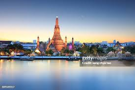

About Bangkok
Bangkok, the capital of Thailand, is known for its vibrant street life and cultural landmarks like the grand palace Wat Phra Kaew Temple. The city is also famous for its bustling markets, rich history, and extensive public transportation system, which includes accessible services to accommodate travelers with disabilities.